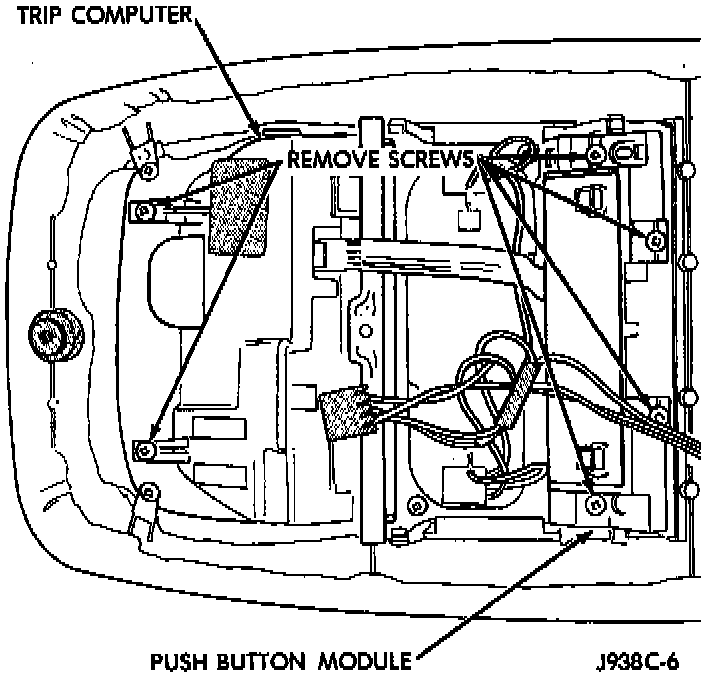

Trip Computer: Service and Repair
REMOVAL1. Remove the overhead console as described.
Trip Computer, Compass, And Thermometer Display Module Remove/Install - Typical:

2. Remove the screws that secure the trip computer, compass, and thermometer display module to the overhead console housing.
3. Unplug the lighting and push button wire harness connectors from the trip computer, compass, and thermometer display module.
4. Remove the module from the overhead console housing.
5. Reverse the removal procedures to install.